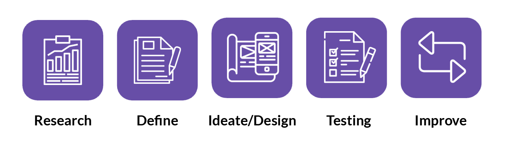
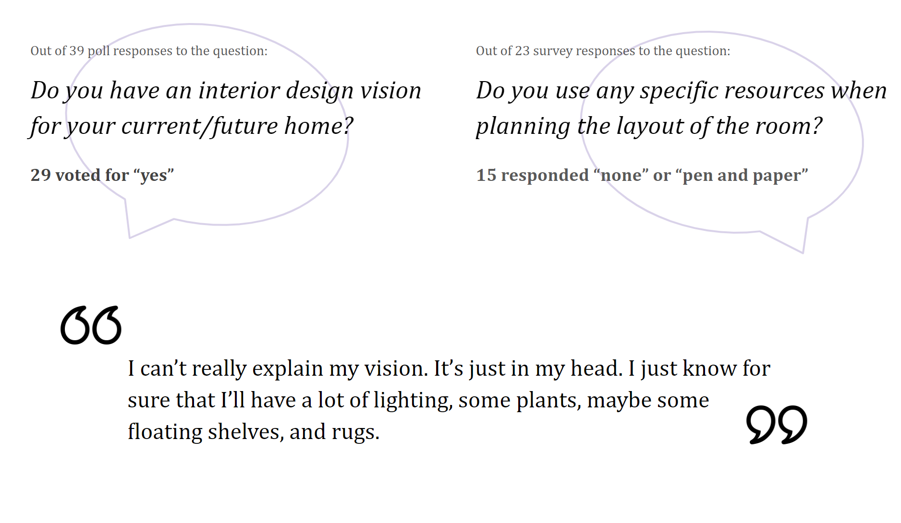
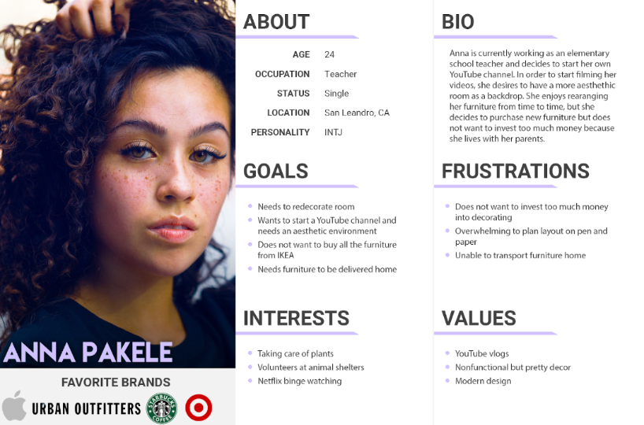
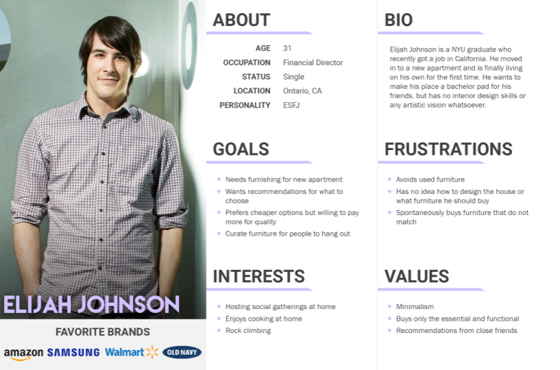
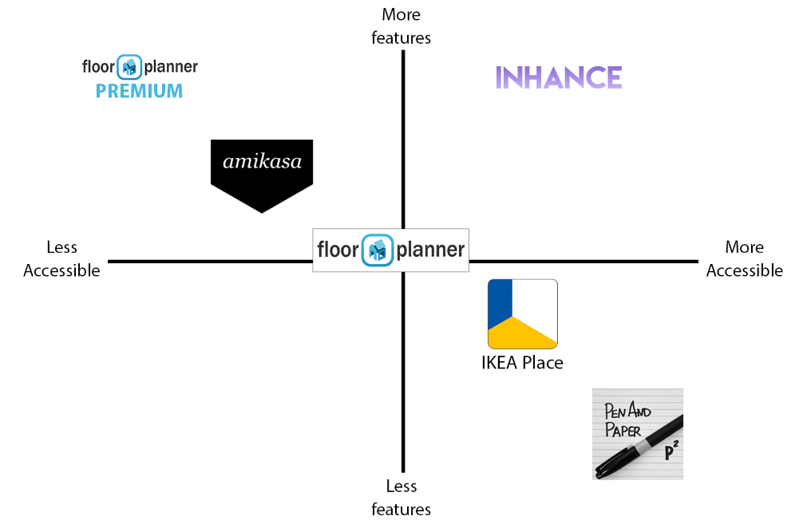
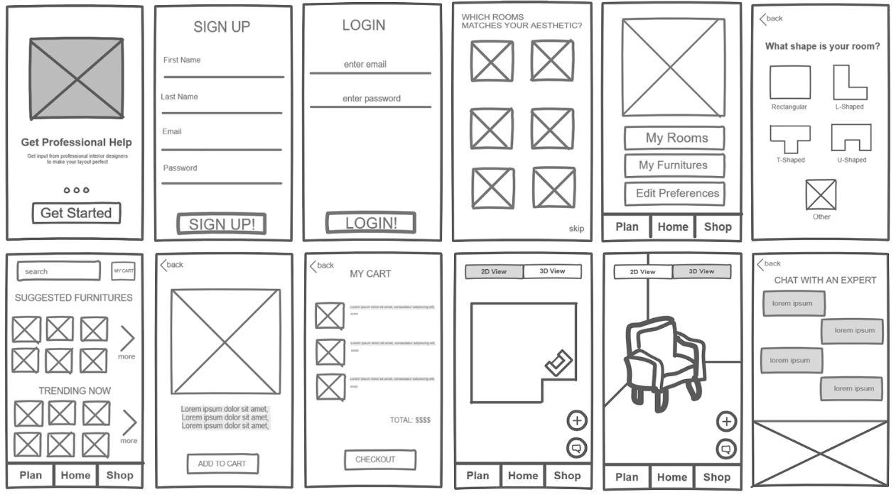
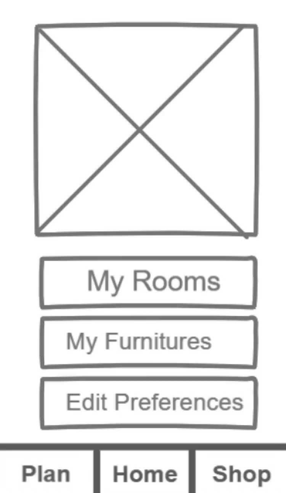
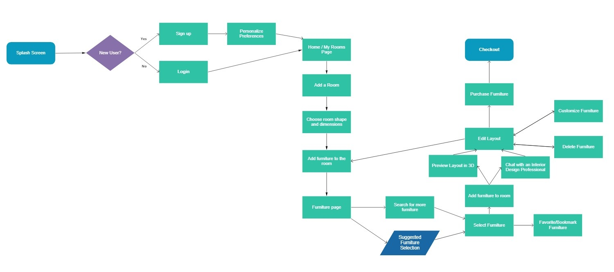
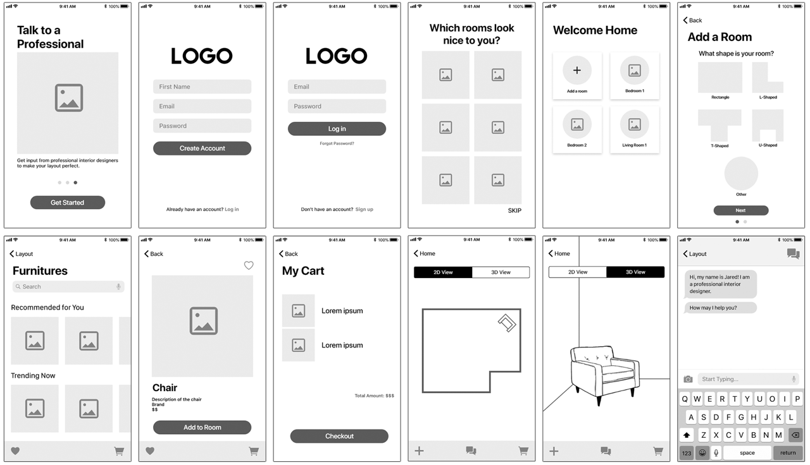

Project Context
Moving into a new home can be stressful. According to the U.S. Census Bureau, roughly 40 million people move every year. Of that 40 million, many of them will be living in a brand new neighborhood, away from family for the first time, or worried about what to bring with them and how. Depending on the situation, it's possible that they can't bring their old furniture with them without having to rent a truck or deal with a moving company. Costs will add up, and at some point, it might be easier to simply buy new furniture instead.
Buying furniture is one problem, but choosing what to buy is another. Not everyone is an interior designer and plans out their rooms down to the details, so knowing which furnishing looks and matches best, where it should go, and if it even fits can be a stressful problem most people don't want to deal with.
Therefore, the design question we seek to answer is: How can we help people choose furniture and plan their room layout?
Design Process
We utilized the User-Centered Design Process to investigate user behavior with regards to moving. We defined the specific needs, goals, and frustrations of potential users and designed an app accordingly. By evaluating our designs, we were able to determine faults in our user flows and repeatedly improve our designs until we achieved our desired product.

User Research
To gain further insight into how users plan their room layouts and what specific tools they use, we conducted user interviews and surveys.

From this research we learned that a majority of users actually have a vision or plan of some sort for their room layouts, but do not normally plan it out in detail. Users either use pen and paper to plan or no tool at all, suggesting that there is a need for a room layout planning tool. Additionally, some users expressed a lack of experience in interior design, and would either seek assistance from others or only purchase essentials for their rooms.
User Persona


Click each image to view in full size
Based on our research, we defined two types of potential users of our app and synthesized user personas accordingly, which will help orient our design process and decide what features are important for our users. The first type of user we encountered is Anna, who still lives with her parents and wishes to redecorate her room. Anna represents most users who are not moving out but desire new furniture for the sake of replacing old ones or redesigning their living spaces. These users generally have a vision for how they want their room to look, but have difficulty planning. Anna is also unable to transport furniture home easily with her car, which is a frustration many users expressed in interviews.
The second type of user is Elijah Johnson, who is moving into a new apartment for the first time. Elijah represents users who lack vision for interior design but still wants their apartment to look nice for when friends come over. Elijah only purchases the essential and functional, sometimes spontaneously, so he usually has furniture that do not match a particular style.
Competitor Analysis
Despite pen and paper being the primary tool used by users, there still exist a few competitors in the room planning field: the website Floor Planner the apps amikasa and IKEA Place. Based on user research, IKEA Place was the only other tool used, far behind pen and paper. The other competitors were not, either due to lack of knowledge about them or their costs. Floor planner PREMIUM and amikasa both provide many features but are paid software. The goal of Inhance is to provide as many features as possible for room layout planning, while being at least as accessible as IKEA Place by providing free services.

Low-Fidelity Wireframes
The following low-fidelity wireframes were designed using InVision Freehand and prototyped with InVision Prototype. Incorporating as many features as planned, we initially designed Inhance to be an app that user scould use to either plan a room layout or shop for furniture, as evident in the separate "Plan" and "Shop" sections in the tab bar.
Click here to check out our low-fidelity inVision prototype!

User Testing
We conducted user tests to evaluate how intuitive our planning and shopping process was, instructing users to browse furniture and edit a room layout. However, many users were confused with the layout of our Home page and about the split user flows between planning and shopping. Because the two flows were so segmented, users also expressed confusion with the overall purpose of the app, asking whether it was meant to be for floor planning or for furniture shopping. Thus, we altered the user flow accordingly to make the two processes appear seamless while using the app.

User Flow
Taking the user testing results into consideration, the following user flow was generated after various iterations:

Click on the image to view in full size
When simplified as seen in the user flow below, the final process involves the user first getting through the onboarding process and signing up. Then the user will plan their room layout, at the same time choosing and shopping for furniture as they add them to their virtual room. Doing so merges together the two flows that confused users during testing. Finally, the user will purchase the furniture they have chosen at checkout.

Click on the image to view in full size
High-Fidelity Wireframes
We designed our high-fidelity wireframes in Adobe XD with the view layouts changed based on our new user flow. The visual design of the app was designed to follow iOS guidelines, making use of UI elements from Apple's iOS 13 Design Templates.

Final Prototype
We used Adobe XD to design our final colored prototype, embedded below. Animations and images were included to make the prototype feel like a realistic, polished app.
Use your mouse and scrollwheel to interact with the final prototype!
Further Steps
To take this project to the next step, we want to add an on-screen tutorial for new users, since learning the different features available in layout planning can be difficult. Additionally, we want to prototype 2D and 3D/AR interactions for the room layout planning and the search and user review flows for furniture shopping, since only a few functions were prototyped due to the time constraints.